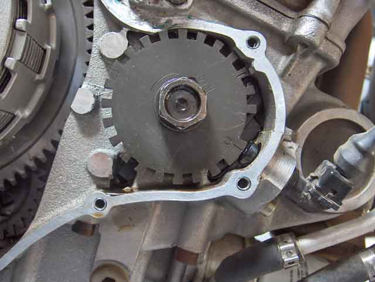
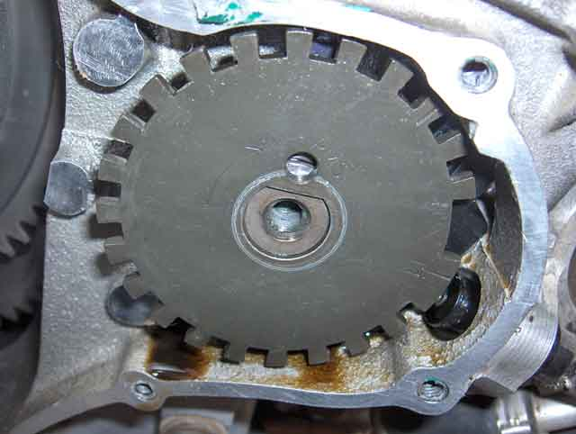
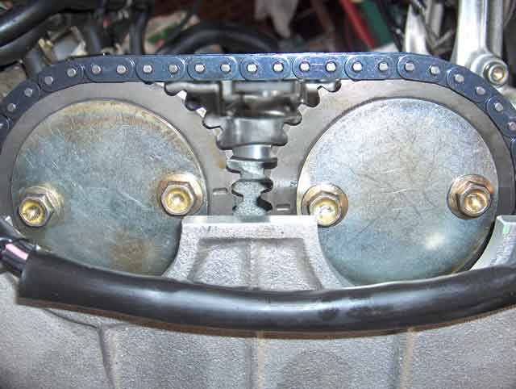

Tornado 903 Camchain Replacement Procedure
(25 Jun 2011)
Removal
(The removal procedure has been written from memory. I may have missed something,
so follow your instincts)
There are two ways to remove the cam chain.
The first, involves removing the camshafts.
If the valve shims don't need changing, the chain can be removed without disturbing the camshafts. This second method is noted in blue.
1. Place the bike on a paddock stand, and drain the oil.
2. In order to remove the cam chain, you will need to remove the fairing, tank and airbox.
3. Remove the throttle cables, to allow access to the tappet cover.
4. Remove any dirt & grit from the clutch & tappet covers, & surrounds - including above. You
don't want anything to fall into the engine when it is open.
5. Remove the coils & plugs, taking care to remember which cable goes where. #1 cable (clutch
side) is the longest, #2 & #3 are easily mixed up.
6. Remove the tappet cover - carefully. If you damage the seal, you'll need to buy another,
and that may take months to arrive. You can re-use this seal, providing a gasket sealer is used
that doesn't harden. Benelli recommends using a gasket only once, but the worst you'll get is
a weap, so if you check it, you'll know about it.
7. Remove the clutch cover - carefully, as above. This one is paper, so more easily damaged.
8. Clean up the mating surfaces of the clutch & tappet covers.
9. Rotate the crankshaft clockwise ....
|  |
 |
| .. until the phonic wheel mark is adjacent the sensor .. |
.. and the timing marks on the camshafts are aligned. |
10. You'll notice that the camshafts will come to rest just before Top Dead Centre, when you
release the torque on the crankshaft.
|  |
 |
| Phonic Wheel with shafts at rest |
Inlet & Exhaust Shafts at rest |
11. Select 6th gear.
12. Holding the rear brake on, in order to lock the crankshaft, remove the Phonic wheel bolt.
13. Rotate the crankshaft back to Top Dead Centre, as in 8. above. If you've held the brake
tight enough, it will not have moved far. Move it back to TDC.
14. Remove the cam chain tensioner.
(Method Two: skip 15-21. Go to 22 below)
15. Remove the inlet camshaft caps, including the bearing cap & top guide over both camshafts. The chain will probably skip over a tooth or 2 at some stage, and the exhaust cam will find a new balance position.
16. Try to remove the inlet cam with the sprocket still attached. The chain will probably be worn enough to allow this, but if you can't, you'll have to remove the sprocket. If so DON'T LOSE the sprocket locating pin into the engine. Pack clean rags in the chain well, just in case.
17. Remove the exhaust camshaft caps.
18. Remove the exhaust camshaft, taking care to restrain the cam chain from falling into the chain well.
19. Remove the fixed guide.
20. Remove the mobile guide pin (at the bottom) & then the guide itself.
21. Remove the phonic wheel, then chain.
Method Two: continued from 14 above
22. Remove the top guide.
23. Remove all four camshaft sprocket bolts and both cover plates. The plates keep the
sprocket locating pins in position, but at present, they will be under pressure, and can't
fall out.
24. Put a magnet over the locating pin hole in the inlet sprocket, to entice it to stay
with the sprocket in the next step.
25. With a finger inserted in the tensioner hole, pressing lightly on the moving guide to
keep tension on the chain, rotate the exhaust camshaft anticlockwise until the cam chain
slackens between the two sprockets. Gently prise the inlet sprocket off the shaft. Once
the pin has disconnected, rotate the exhaust camshaft back to it's resting position.
26. Remove the chain from the sprocket, and drape it over the shaft flange, taking care not to loose the locating pin in the process.
27. Place the magnet over the locating pin hole in the exhaust sprocket.
28. Rotate the exhaust camshaft clockwise until the sprocket locating pin is no longer
under tension, then remove the sprocket, draping the chain over the exhaust shaft flange.
Take care with the pin.
19. Remove the fixed guide by slipping it up out of it's slot at the top. A gentle nudge from below may be needed. The chain can't be removed with this in position.
29. Remove the phonic wheel, then the chain by slipping it over the crankshaft drive sprocket, then up.
30. Remove the mobile guide pin (at the bottom) & then the guide itself.
31. Skip the following section on shim measurement and
go directly to Fit Check.
Measure your shims
Now is a very good time to measure your tappet shims. If you know what they are, you'll be able to specify new ones, when the time comes to adjust them, without putting the bike off the road for months, waiting for them to arrive. Or at the very least, having to remove the cams twice, in order to complete the job.
A word of warning though - the original shims on my engine were soft. After 25,000 km, they had an indentation worn by the valve stem. Clearly, any previous measurement of the shim thickness had been rendered useless. These shims had to be refitted, with the dent away from the valve stem this time, the camshafts and chain reinstalled, and the clearances re-measured.
I had been tracking the valve clearances for 20,000 km, and was surprised to find that they were increasing. This is counterintuitive, as the norm is for the valve to recess into the seat, and reduce the clearance.
Now I know why!
Next step: To Fit Check